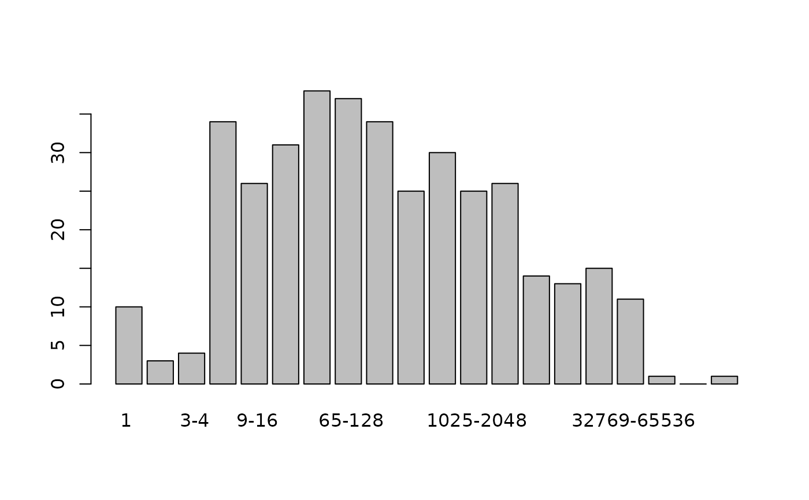

Preston diagram of an ecosystem
preston.RdGives a standard Preston diagram for an ecosystem.
Arguments
- x
Ecosystem vector that is coerced to class
count, or a matrix whose rows are species counts- n
An integer specifying the number of species abundance classes to use, with default
NULLmeaning to use \(1+\log_2(J)\). Must be greater than 1 if specified. Ifxis a vector,NULLis not acceptable as the program does not try to guess what is required- original
Boolean, with default
FALSEmeaning to use the nonoverlapping technique discussed below, andTRUEmeaning to use Preston's original formulation.
Details
The Preston diagram is a table showing the number of species having
abundances in specified abundance classes. Consider the following
Preston diagram, created with original = FALSE:
1 2 3-4 5-8 9-16 17-32 33-64 65-Inf
number of species 10 5 7 5 1 5 4 0
This shows that there are 10 species with abundance 1 (that is, singletons); 5 species with abundance 2; 7 species with abundance 3-4; 5 species with abundance 5-8, and so on. This method is used by Hubbell (2001), and Chisholm and Burgman (2004).
Setting argument original to TRUE means to follow Preston
(1948) and count any species with an abundance on the boundary between
two adjacent abundance classes as being split 50-50 between the classes.
Thus the fourth class would be
\(\phi_4/2+\phi_5+\phi_6+\phi_7+\phi_8/2\)
where \(\phi_i\) is the number of species with abundance
\(i\) (given by phi(x)).
References
F. W. Preston 1948. “The Commonness, and Rarity, of Species”. Ecology 29(3):254-283
R. A. Chisholm and M. A. Burgman 2004. “The unified neutral theory of biodiversity and biogeography: comment”. Ecology 85(11): 3172-3174
S. P. Hubbell 2001. “The Unified Neutral Theory of Biodiversity”. Princeton University Press
Examples
preston(untb(start=rep(1,100), prob=0.01, gens=1000, keep=FALSE))
#> 1 2 3-4 5-8 9-16 17-32 33-64 65-Inf
#> number of species 0 1 1 0 1 0 0 1
data(butterflies)
preston(butterflies)
#> 1 2 3-4 5-8 9-16 17-32 33-Inf
#> number of species 10 5 7 5 1 5 4
preston(butterflies,original=TRUE)
#> 1 2 4 8 16 32 64
#> number of species 5 7.5 9 5 1.5 5 4
data(copepod)
preston(copepod)
#> 1 2 3-4 5-8 9-16 17-32 33-64 65-128 129-256 257-512
#> number of species 10 3 4 34 26 31 38 37 34 25
#> 513-1024 1025-2048 2049-4096 4097-8192 8193-16384
#> number of species 30 25 26 14 13
#> 16385-32768 32769-65536 65537-131072 131073-262144
#> number of species 15 11 1 0
#> 262145-Inf
#> number of species 1
plot(preston(copepod))
